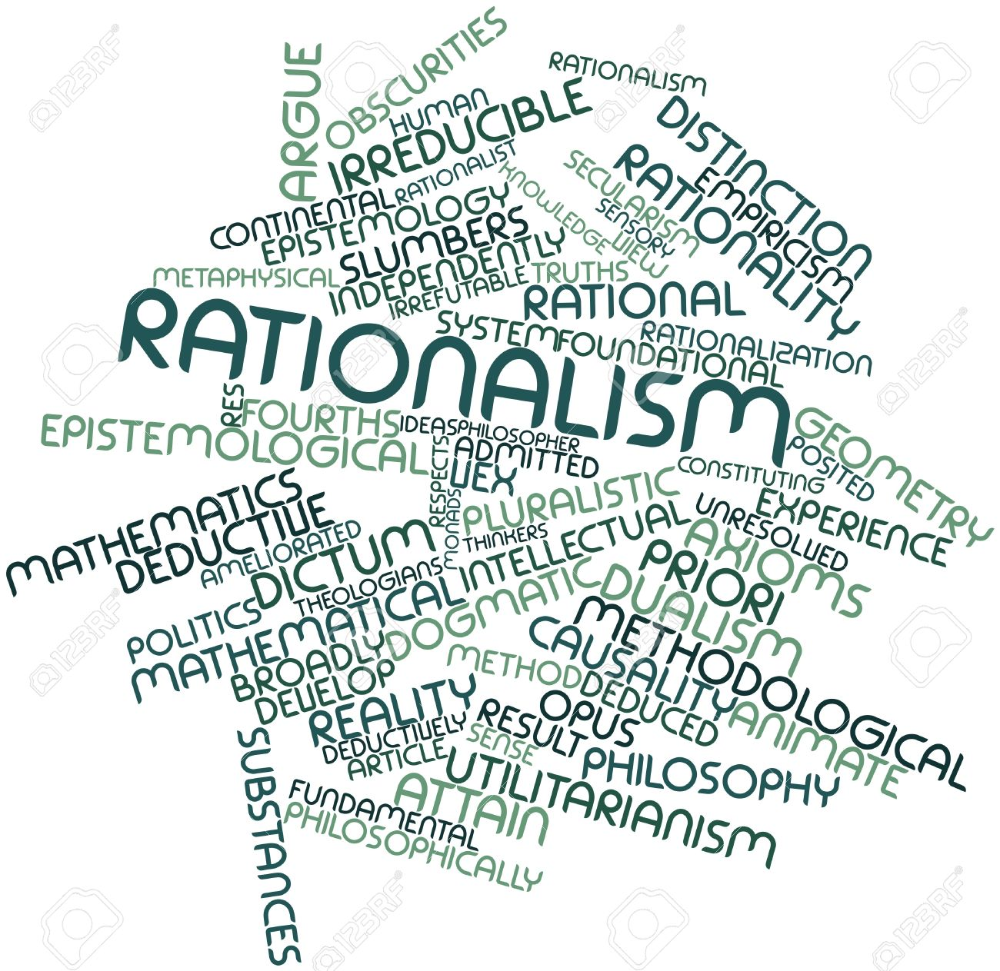

Periyar spent over fifty years giving speeches, propagating the realisation that everyone is an equal citizen and the differences on the basis of caste and creed were man-made to keep the innocent and ignorant as underdogs in the society. Periyar viewed reasoning as a special tool. According to him, all were blessed with this tool, but very few used it. Thus Periyar used reasoning with respect to subjects of social interest in his presentations to his audiences.
His speeches not only touched the illiterate people but also many of the educated ones. Periyar indeed was a gifted orator and an excellent social reformer.
Principles that were followed by Periyar
Rationalism
"Reason is the source and test of knowledge

Periyar wanted the exploited to think about their position and use their reason to realise that they were being exploited by some people. If they started thinking, they would realise that they were human beings like the rest, that birth did not and should not provide superiority over others and that they must awaken themselves and do everything possible to improve their own kind.He explained that wisdom lies in thinking. The differences, hatred, enmity, degradation, poverty, and wickedness, now prevalent in the society are due to lack of wisdom and rationalism and not due to God.
Rationalism, which has to lead the way for a peaceful life to all, resulted in causing poverty and worries to the people because of dominating forces. He stated that there is no use of simply acquiring titles or amassing wealth if one has no self-respect or scientific knowledge.
In a message to the Brahmin community, Periyar stated, "in the name of god, religion, and shastras you have duped us. We were the ruling people. Stop this life of cheating us from this year. Give room for rationalism and humanism. Any opposition not based on rationalism, science, or experience will one day or another, reveal the fraud, selfishness, lies and conspiracies".